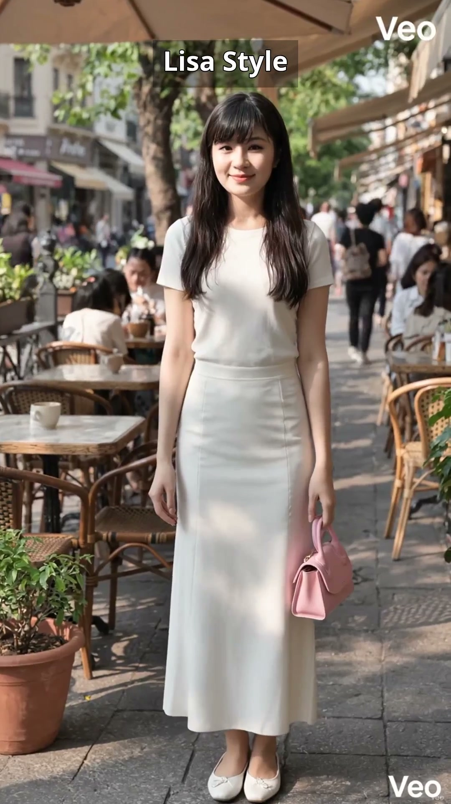
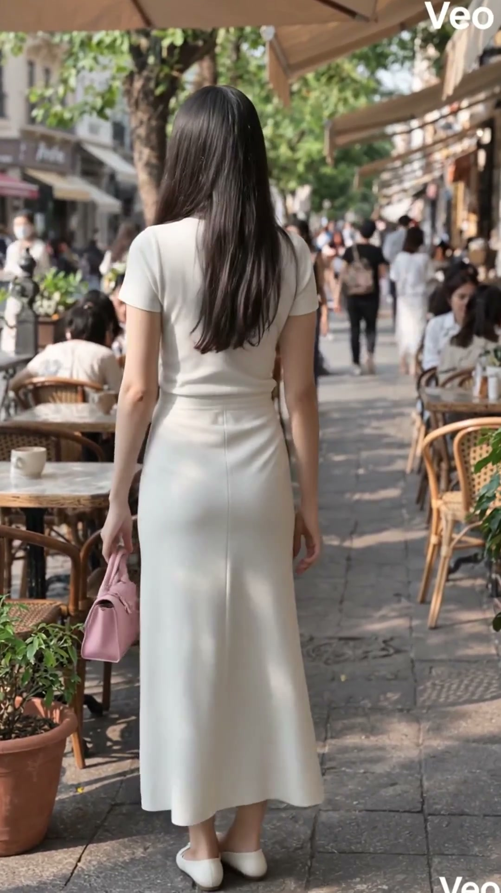
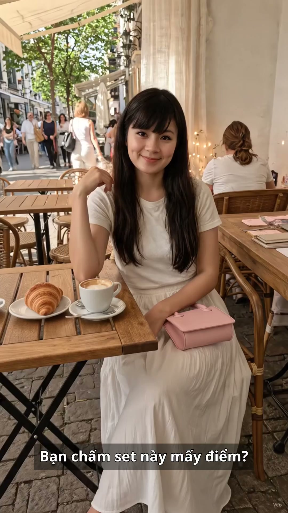
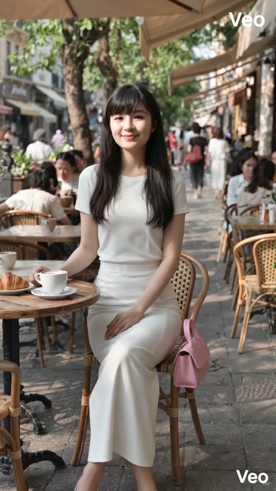

Set trắng đi café cuối tuần: áo ôm trắng + chân váy dài + túi hồng pastel

Sáng cuối tuần đi café, Lisa chọn set trắng này: áo ôm trắng tay ngắn + chân váy dài trắng + giày bệt trắng + túi xách hồng pastel. Áo ôm trắng, chân váy dài, túi hồng pastel siêu xinh — set trắng tinh khôi đang là xu hướng đi café cuối tuần.
Đọc trước khi mua: bài viết này là gợi ý phối đồ lấy cảm hứng từ xu hướng set trắng đi café cuối tuần đang viral trên TikTok. Lisa là nhân vật AI, nên bài viết không phải bài đánh giá sản phẩm Lisa đã mặc thật hay đã dùng thử. Giá, chất liệu và size cần kiểm tra lại trên trang bán trước khi mua. Link mua hàng: [CHƯA GẮN LINK] — sẽ cập nhật khi Lisa Style đủ điều kiện gắn link affiliate.
Cùng một set trắng, nhìn lúc đứng xoay trên sân hiên, lúc ngồi bàn café và lúc cười duyên sẽ khác nhau — xem đủ 3 góc rồi hãy quyết có hợp với bạn không:

Xoay khoe set — váy dài trắng thướt tha

Ngồi bàn café — túi hồng pastel là điểm nhấn

Cười duyên — trắng tinh khôi sáng mặt
Vì sao set trắng hợp đi café cuối tuần?
Trắng tinh khôi, lên ảnh đẹp: set trắng toàn thân nổi bật trên nền quán café gỗ, cây xanh và ánh nắng sáng; chụp ảnh hay quay video đều sáng mặt, không cần chỉnh màu nhiều.
Áo ôm + váy dài, cân bằng tỉ lệ: áo ôm tay ngắn gọn phần trên, chân váy dài thướt tha phần dưới; dáng nhỏ mặc vào vẫn cao ráo vì đường cắt chia rõ eo — chân.
Túi hồng pastel làm điểm nhấn: cả set chỉ có một màu hồng nhạt duy nhất, vừa đủ xinh mà không rối; túi nhỏ xách tay hợp café, không hợp mang nhiều đồ.
Giày bệt trắng, đi cả buổi không mỏi: đi café cuối tuần thường ngồi lâu, đi dạo quanh phố; giày bệt trắng vừa hợp set, vừa thoải mái hơn cao gót nhiều.
Cách chọn set trắng cho vừa người
Dáng nhỏ thì chọn váy dài chạm gót: váy dài chạm gót, đi giày bệt trắng sẽ kéo chân dài hơn hẳn; váy ngắn hơn mắt cá sẽ làm chân trông ngắn lại.
Áo ôm vừa người, không ôm sát quá: áo ôm tay ngắn nên vừa người, ôm nhẹ là đủ; ôm sát quá sẽ lộ khuyết điểm, rộng quá thì mất dáng của set.
Trắng ngà hay trắng tinh đều được: trắng tinh hợp da sáng, trắng ngà hợp da ấm hơn; cả set nên cùng một tông trắng để không lệch màu khi lên ảnh.
Túi hồng nhạt, không hồng đậm: hồng pastel nhạt mới hợp set trắng; hồng đậm sẽ át hết set đồ, túi cũng nên nhỏ gọn, xách tay là vừa.
Mẹo phối nhanh trong 3 phút
Buổi sáng vội: mặc sẵn áo ôm trắng + váy dài trắng, thêm giày bệt và túi hồng là xong; không cần nghĩ phối màu vì trắng với hồng pastel đã hợp nhau sẵn.
Muốn trẻ hơn: xõa tóc dài, đeo khuyên tai nhỏ màu bạc; tránh vòng cổ to sẽ làm cổ áo ôm trông nặng nề.
Muốn sang hơn cho buổi hẹn: đổi giày bệt thành cao gót nude, thêm đồng hồ dây da trắng; set trắng vẫn giữ được vẻ tinh khôi mà sang hẳn lên.